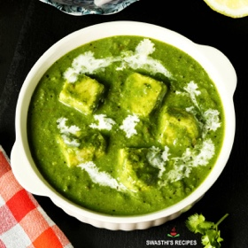

← All recipes
Palak Paneer Recipe

Servings: 2 to 3 · Prep: 15 minutes · Cook: 30 minutes
Ingredients
- INGREDIENTS (US CUP = 240ML )
- 150 grams (1¼ cups) paneer (Indian cottage cheese)
- 3½ to 4 cups (100 to 120 grams) palak (spinach)
- 2 tablespoons oil (or half oil & half butter)
- 2 green chilies (deseeded) (less spicy kind)
- ¾ cup ( 90 grams, 1 small) onions (fine chopped)
- ½ cup (1 small) tomatoes (deseeded & chopped or pureed)
- ¾ teaspoon ginger garlic paste (read notes for substitute)
- ½ teaspoon salt (use as per your taste)
- 8 to 10 cashewnuts (read notes for substitutes)
- ½ to ¾ teaspoon garam masala (adjust to taste)
- ½ teaspoon kasuri methi (dried fenugreek leaves) (skip if you don't have)
- ¼ cup water to blend spinach
- ¾ cup water to cook the gravy
- 3 tablespoons cream (optional)
- (Optional) Whole spices for palak paneer
- ⅛ teaspoon cumin seeds (jeera) (optional)
- 2 green cardamoms (elaichi) (optional)
- 1 inch cinnamon (dalchini) (optional)
- 2 cloves (laung) (optional)
Directions
- 1. This recipe needs about 4 cups loosely measured or 2 cups tightly packed (100 to 120 grams) palak leaves. Use only young and fresh spinach. Avoid using large stems or stalks, especially from mature spinach/ palak as they make the gravy bitter. If using baby spinach keep the tender stalks.
- Rinse cleaned palak thoroughly in a large pot filled with water. I also spray some vinegar and salt to remove the pesticide residue first. Rinse a few times more. Drain off the water completely. If you are on a low oxalate diet then you can blanch the spinach by following the steps mentioned in the recipe card.
- 2. Add half tablespoon oil to a pan. then add 1 to 2 chopped green chilies. There is no red chilli powder used in this recipe. So use enough green chilies to give that heat. Adjust accordingly.
- 3. Add palak and 8 to 10 cashew nuts. Saute on a medium heat until the palak wilts off completely. This takes only 2 to 3 minutes. Do not overcook, spinach takes only 2 to 3 mins to cook.
- 4. Ensure the raw flavor from the leaves has gone. If there is any stock (moisture) of spinach left, you can use up to blend. You need not evaporate it.
- 5. Cool it completely. Transfer these to a blender jar. Pour ¼ cup clean water to the blender.
- 6. Blend this to a smooth puree. It has to be thick and smooth. Keep this aside.
- Making gravy
- 7. Heat the same pan with 1 tablespoon butter and half tablespoon oil . Add 2 whole cardamoms, one inch cinnamon piece, 2 cloves and 1/8th teaspoon cumin seeds. If you do not have whole spices you may skip them. But we are not going to use much garam masala in powder form so I use them.
- 8. Add ¾ cup fine chopped onions or boiled onion paste. Fry until the onions turn golden. Then add ¾ teaspoon ginger garlic paste. Saute for 1 minute or until the aroma of ginger garlic comes out.
- 9. Then add deseeded fine chopped half cup tomatoes or tomato puree and half teaspoon salt. Saute them well.
- 10. When the tomatoes turn fully mushy, add ½ to ¾ teaspoon garam masala. Please use a good flavorful garam masala. Saute until the masala smells good for 2 to 3 mins. (Optional if you don’t like chunky curry, remove the cinnamon, cloves, cardamoms and add back to the pan. Blend the onion tomato masala as well separately with ½ to ¾ cup water.)
- 12. Pour ¾ cup water and cook covered on a medium heat until the onions are completely soft cooked. After cooking, onion tomato masala has to be thick yet should have some water. (check video for consistency) Take half teaspoon kasuri methi in your palm and crush it. Add it here.
- Making palak paneer
- 14. When the gravy thickens, lower the flame completely. Next add the palak puree. Mix it well and cook until it begins to bubble just for about 2 mins. I do not suggest cooking for long at this stage as it discolors the gravy. If you prefer your curry slightly thin, then you may stir in a few tablespoons of hot water at this stage. Taste test and add more salt.
- 15. Add cubed paneer – (150 grams (5.5 ounces, 1¼ cups))
- 16. Give a good stir. Switch off the stove. If using cream pour it now. You can skip cream is you have used cashews while pureeing the spinach. Honestly this recipe does not need cream & I don’t use on a regular basis. I only used for garnishing in the pictures below.
- To make palak paneer, always spinach is blanched prior to making a puree. But if you are trying to make the best palak paneer, give it a try without blanching.
- I am sure you will wonder how good this tastes and completely different from the one made with blanched spinach.
- 2. Preserving the color of palak: To get the best color, keep garam masala to minimum in this recipe and also prevent overcooking spinach which darkens the dish.
- 3. Smooth creamy texture: I have used few cashews to give a slightly creamy texture to the palak paneer gravy. However you can just skip them and use about 3 to 4 tbsps cream. You can also use blanched almonds.
- 4. Paneer: Do choose good quality paneer as it is the key ingredient in this palak paneer recipe. I use this homemade paneer which is soft with a melt-in-the-mouth texture.
- If using frozen store bought paneer then soak it in slightly hot water for 15 to 20 mins. Drain and use. This helps to keep it soft.
- Can you freeze palak paneer?
- Yes you can freeze palak paneer for a month. Once the onion tomato masala is ready, turn off the heat and cool it completely & immediately. Later mix the spinach puree and transfer to air tight glass freezer safe container. When required, thaw it and heat on a low heat until bubbling and hot. You can also heat it in an instant pot.
- Pluck only the young & tender spinach leaves and discard the stems as they may leave a bitter taste. If using baby spinach you can use the stems as well.
- Add them to a large pot of water. Rinse them well few times & drain to a colander.
- Allow the water to drain completely otherwise it will let out lot of moisture while cooking.
- Heat half tablespoon oil in a pan. Saute green chilies, cashews and spinach for 3 to 4 mins until the leaves wilt off thoroughly & raw smell of spinach has gone away. [OR another option is to blanch the palak in 4 cups of hot water with ¼ tsp salt for 2 mins. Then immerse in ice cold water. Drain completely.]
- Cool this completely. Blend this along with water to a smooth puree. The puree should be smooth and thick. You may add 1 to 2 tbsps more water to help in blending.
- How to make Palak Paneer
- Heat 1 tablespoon butter and half tablespoon oil to the same pan, Once they melt, add cinnamon, cardamoms, cloves & cumin seeds.
- When the spices begin to sizzle, add onions and fry till they turn transparent to golden.
- Next saute ginger garlic paste for 1 to 2 minutes or until you begin to smell it nice.
- Then add tomatoes with salt. Saute until they break down and turn mushy.
- Add garam masala & saute until the masala smells good. This may take 2 mins. (for a smoother curry refer notes)
- Pour water and cook covered until onions are completely soft. There should be some water left in the pan. (for consistency check video)
- Lower the flame, add kasuri methi and pureed spinach. Mix well and cook until it begins to bubble for about 2 to 3 mins. If the curry is too thick you may add a few tbsps of hot water.
- Avoid overcooking. Add paneer & mix well. Turn off and remove to a serving bowl. Optionally garnish with cream.
- Serve palak paneer with naan, roti, Basmati rice or Jeera rice.
Notes
This recipe can be doubled.
Substitute ginger garlic paste with ½ teaspoon minced ginger and ¾ teaspoon minced garlic.
Substitute cashews with 7 blanched and soaked almonds or 2 tablespoons almond flour. The taste is different with almonds.
For a smoother gravy, after sauteing the onion and tomatoes with garam masala, cool it. Remove the cardamoms, cloves and cinnamon, keep them aside. Blend the onions tomatoes to a smooth puree with ½ to ¾ cup water. Add back the spices to the pan along with the puree. Cook this until you see traces of oil. When the gravy thickens add the palak puree.
If using baby spinach, stems can be used. If using mature spinach, avoid using stalks & stems as they may lend a bitter taste. Cut off each stem from the leaves. Overcooking palak can leave a bitter taste.
You can use more spinach if you like.
Whole spices are optional. But they do add a lot of flavor to the dish. However you can skip them and add more garam masala to suit your taste.
Optional: If using store bought paneer, then cube them and add to 2 cups hot water. Keep these immersed for 10 mins. Drain and use.
Original source: indianhealthyrecipes.com